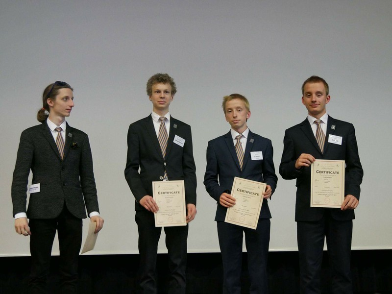

Gazeta ZSO nr II w Opolu
Numer 4/2017
Dwaj bracia z Dwójki mistrzami Polski w fizyce

- O Międzynarodowym Turnieju Młodych Fizyków (International Young Physicists' Tournament, IYPT) nazywanym też mistrzostwami świata w fizyce, usłyszeliśmy w radiu, a że kochamy fizykę to poszukaliśmy dokładniejszych informacji i tak zaczęła się nasza przygoda z konkursem i Klubem Naukowym Fenix – opowiada Filip Kubacki z drugiej klasy PLO nr II o profilu matematyczno – fizycznym. Za zwycięstwo w finale krajowym pojadą w lipcu na tydzień do Singapuru gdzie będą reprezentować Polskę w zawodach międzynarodowych.
Przez cały rok szkolny zespół zmagał się z zadaniami z różnych dziedzin fizyki, np. hydrodynamiki, termodynamiki, czy optyki. – Zadania związane są z nowo odkrytymi zjawiskami i z prowadzonymi aktualnie badaniami. W finale który odbywał się w Instytucie Fizyki PAN w Warszawie rozwiązując przez osiem godzin 10 zadań pokonali zespoły z całej Polski. Rozgrywki krajowe odbywały się w języku angielskim. – Postawione problemy nie mają jednego konkretnego rozwiązania, aby je rozwiązać trzeba przeprowadzić badania, potem je zaprezentować i „obronić”. Każda faza jest oceniana – wyjaśnia Michał Kubacki.
W ramach treningu przed zawodami w Singapurze skorzystali z zaproszenia i razem ze swoimi mentorami z Klubu Fenix: Łukaszem Gładczukiem (doktorantem na Okswordzie) i Radostem Waszkiewiczem, obecnie studentem Cambridge, wzięli udział w finale konkursu dla licealistów austrackich w Leoben. Zajęli tam drugie miejsce.
Autorem konkursu który odbywa się od 1979 r. jest Evgeny Yunosov. Polska uczestniczy w IYPT od 1989 roku.
ul. Pułaskiego 3
45-048 Opole
tel. 077 45 422 86
fax 077 02 18 87
e-mail:
bez.tytulu@o2.pl
Ola Orłowska
DTP
Michał Woś
Opiekun
mgr Lucyna Rudnik
Ola Orłowska, Ania Cichy, Dagmara Cioska, Julia Nowicka, Julia Marcinów, Hania Szarzewicz, Michał Woś, Bartek Lipnicki, Jonasz Mularz, Paweł Kubacki, Mateusz Pietruszyński, Mateusz Orlik